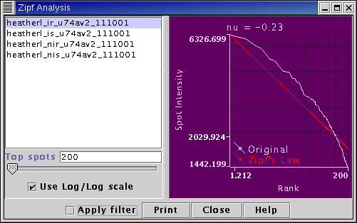

Zipf's law (G.K. Zipf (1936) The Psycho-biology of Language: An Introduction to Dynamic Philology; G.K. Zipf (1949) Human Behaviour and the Principle of Least Effort) is concerned with the frequency of occurrence of objects, or with the size of objects, and how those frequencies/sizes decrease with rank r (from the highest r = 1 to the lowest). For example the frequency of occurrence of words within large pieces of text, or the sizes of cities both follow Zipf's law.
It has been noted recently (D.C. Hoyle et al, Bioinformatics 18 (2002), to appear) that the highest spot intensities from a microarray experiment (when ranked in order) follow Zipf's law very closely. This application plots the ordered spot intensities against rank r. When log(spot intensity) is plotted against log(rank) the highest spot intensities should follow a straight line. A Zipf's law exponent, represented by the Greek letter nu, is calculated.

Select a Measurement from the list on the left-hand side of the panel. The plot of intensity against rank is displayed on the right-hand side.
The Zipf's law exponent (the nu value) is displayed at the top of the graph.
The slider at the bottom of the panel selects how many of the top ranking Spots will be used for the display.
A Log/Log scale can be selected as required.
(no plugin commands available)